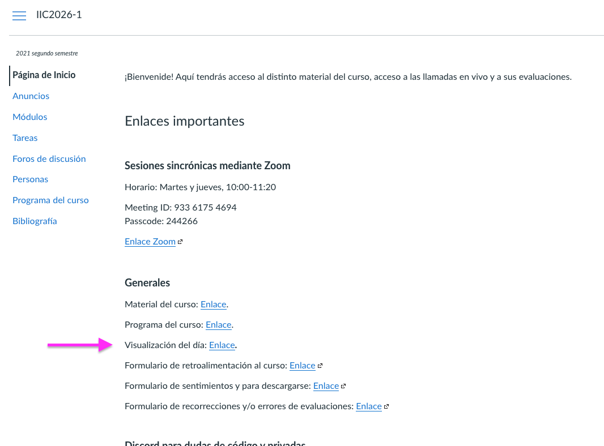
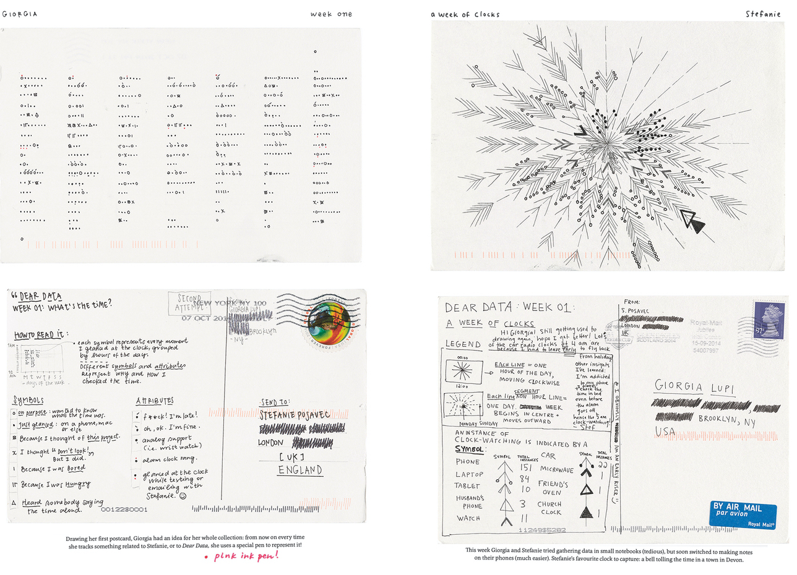

¡Hola 👋! Espera mientras comienza la sesión.
Antes que todo, ¿cómo están?
Visualización de Información
IIC2026 2021-2
Codificaciones, marcas y canales
Visualización de Información
IIC2026 2021-2
El contenido
El contenido
1. El cómo
2. Marcas y canales
3. Utilizar marcas y canales
El contenido
1. El cómo
2. Marcas y canales
3. Utilizar marcas y canales
¡Mini cuestionario!
Codificación visual y de interacción
- Definir el cómo.
- Idiom: enfoque distintivo de codificar información o manipularla.
- Hay decisiones visuales y decisiones de interacción.
Marcas
- Cero-dimensionales
- Uni-dimensionales
- Bi-dimensionales
- Tri-dimensionales

Canales
- Posición unidimensional
- Posición bidimensional
- Forma
- Curvatura
- Rotación
- Color de relleno o de borde:
- Matiz de color
- Saturación de color
- Luminancia de color
- Tamaño:
- Largo
- Área
- Volumen
- ...
Tipos de canales
Canales de identidad
Canales de magnitud
Tipos de marcas
Marca de ítem
Marca de conexión
Marca de contención
Glifos
Utilizar marcas y canales
No todos los canales no son iguales o equivalentes. La representación del mismo atributo a través de canales distintos los percibimos de forma distinta.
Principio de expresividad
Principio de efectividad
¡Actividad grupal!
¡Actividad grupal!
A cada grupo asignado a una Sala de Zoom, se le asignará un ejemplo de visualización que el equipo docente encontró en la web. Como grupo deben revisar el ejemplo asignado, y descomponerlo pensando en las marcas y canales que ven en uso.
¡Actividad grupal!
A cada grupo asignado a una Sala de Zoom, se le asignará un ejemplo de visualización que el equipo docente encontró en la web. Como grupo deben revisar el ejemplo asignado, y descomponerlo pensando en las marcas y canales que ven en uso.
Dejen su progreso en un documento asignado. Deben enlistar:
- Las marcas que ven presentes, que están siendo utilizadas para representar algo. Para cada marca identificada, indicar su tipo: marca de ítem, conexión, contención o glifo.
- Los canales de las marcas que están siendo utilizados para codificar información. Para cada canal, indicar su tipo aparente: si es de magnitud o de identidad.
También, reflexionen sobre los principios de expresividad y de efectividad en la visualización y comenten.
¡Actividad grupal!
Para cada grupo elijan:
- Al menos una persona que se encargue de escribir en documento los resultados del grupo.
- Al menos una persona que tenga el material de la sesión a mano y pueda consultarlo en caso de haber dudas en el grupo.
- Al menos una persona que recompile las dudas que surgieron en el grupo al realizar la actividad y se mantienen al final de la actividad.
¡Actividad grupal!
Salas y documentos asignados:
- Sala 1: Documento Ejemplo 1
- Sala 2: Documento Ejemplo 2
- Sala 3: Documento Ejemplo 3
- Sala 4: Documento Ejemplo 4
- Sala 5: Documento Ejemplo 1
- Sala 6: Documento Ejemplo 2
- Sala 7: Documento Ejemplo 3
- Sala 8: Documento Ejemplo 4
- Sala 9: Documento Ejemplo 1
- Sala 10: Documento Ejemplo 2
- Sala 11: Documento Ejemplo 3
- Sala 12: Documento Ejemplo 4
- Sala 13: Documento Ejemplo 1
- Sala 14: Documento Ejemplo 2
- Sala 15: Documento Ejemplo 3
- Sala 16: Documento Ejemplo 4
- Sala 17: Documento Ejemplo 1
- Sala 18: Documento Ejemplo 2
- Sala 19: Documento Ejemplo 3
- Sala 20: Documento Ejemplo 4
Break antes de continuar
Resultados de actividad grupal
¡Visualización del día!
¿Visualización del día?
¿Visualización del día?
Es un espacio que dedicaremos cada sesión a ver un ejemplo interesante de visualización. También se subirán a Canvas.
La idea es estar continuamente viendo distintos ejemplos de visualización, ya sean buenos o malos.
Puedes proponer una visualización para que sea la visualización del día. Hay un formulario en Canvas😄.
¿Visualización del día?

¡Visualización del día!
Propuesto por ayudante Daniela Concha.
(Fuente: Dear Data de Stefanie Posavec y Giorgia Lupi)
Próximos eventos:
Recuerden responder los Cuestionarios asociados a esta semana.
Próximos eventos:
Recuerden responder los Cuestionarios asociados a esta semana.
Próxima semana revisaremos el material de Abstracción de datos e Introducción a HTML, CSS y SVG.
Próximos eventos:
Recuerden responder los Cuestionarios asociados a esta semana.
Próxima semana revisaremos el material de Abstracción de datos e Introducción a HTML, CSS y SVG.
Próxima semana se realizará primera Ayudantía del curso.